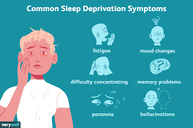
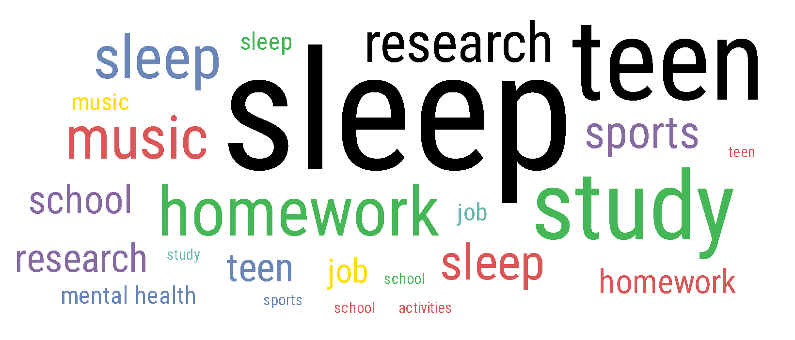

A Lack Of Sleep Can Harm Your Kids
Sleep deprivation has a myriad of unwanted effects that negatively impact student in school and cause them to be emotionally unstable.
This claim is supported by a comprehensive review written about previous studies that analyzed the impact of a delayed school start time (Minges and Redeker 87). In their review, Yale medical professors, Karl E. Minges, and Nancy S. Redeker emphasize the importance of sleep for students, arguing that, Adolescents who are chronically sleep restricted perform academically poorer in morning classes and in overall performance, have increased absenteeism and tardiness, and a decreased ability to learn and retain material, actively participate in class, and perform decision-making tasks. Furthermore, sleep compromised adolescents are also more likely to be depressed, anxious, irritable, defiant, apathetic, and impulsive than adolescents who achieve optimal sleep. (Minges and Redeker 87)
Scary But True
A lack of sleep can cause some harrowing side-effects
Even burdened with the troubling evidence about the consequences of sleep deprivation, it must be demonstrated that a sleep crisis is common in order to constitute a change dramatic as moving a school district’s start time forward.
The majority of adolescents do not receive enough sleep. The American Academy of Pediatrics writes that "87% of high school students in the United States are getting less than the recommended 8.5 to 9.5 hours of sleep on school nights" (643). Even more concerning is the fact that over two-thirds of parents were satisfied with the amount of sleep their children received (Owens 643).
If a delayed school start time could be proven to result in longer sleep, it would be a remedy for this sleep epidemic, allowing adolescents to get the amount of sleep they need to function at their fullest potential.
Counterargument
“Busy schedules and the overuse of phones, tablets, computers, video games and television have as much, if not more, negative impact on our teenagers’ sleep schedules than the time at which school begins” (Mantz et al). "
~Doug Mantz, a concerned parent in his letter to his school board.
FULL OP-ED By Doug Mantz
While increased screen time and late-night study sessions may play a role in the amount of sleep a student receives, the American Academy of Pediatrics suggests that adolescents do not have complete control over their sleep habits. Adolescent's bodies are wired to operate on a different sleep schedule, causing them to go to bed later (Owens 642). This sleep pattern in adolescents is biological, and not a result of controllable factors (Owens 642). The American Academy of Pediatrics writes, "One factor is delayed timing of nocturnal melatonin secretion across adolescence that parallels a shift in circadian phase preference from more ‘morning’ type to more ‘evening’ type, which consequently results in difficulty falling asleep at an earlier bedtime" (Owens 642).
Furthermore, The American Academy of Pediatrics says that adolescents experience an "altered 'sleep drive' across adolescence, in which the pressure to fall asleep accumulates more slowly" (Owens 642). In short, adolescents do not have complete control of their sleep habits, much of which is determined by biological changes (Owens 642). This evidence suggests that the school start time delay should be implemented to allow students the sleep they need to adjust to the biological sleep changes they experience as adolescents.